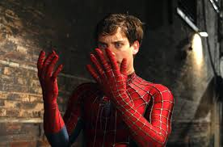
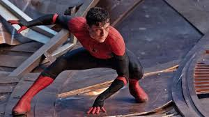
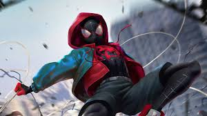

Análisis Profundo de las 5 Versiones Más Influyentes del Hombre Araña
El universo de Spider-Man ha cobrado vida en múltiples formatos, cada uno ofreciendo una perspectiva única sobre el héroe. Desde el drama del sacrificio hasta la frescura del multiverso, aquí exploramos en detalle a cinco figuras que han marcado el legado arácnido.
1. Tobey Maguire (El Pesar de la Responsabilidad)
La interpretación de Tobey Maguire en la trilogía de Sam Raimi estableció la plantilla para los superhéroes cinematográficos del siglo XXI. Su Peter Parker se caracteriza por su notable timidez y la constante lucha interna con el peso del lema: "Un gran poder conlleva una gran responsabilidad." El enfoque principal de la narrativa es el sacrificio personal que el heroísmo exige, a menudo a costa de su propia felicidad y relaciones personales.
Un detalle distintivo de esta versión son sus telarañas orgánicas, una decisión que simplificó el proceso de su origen y enfatizó que sus poderes son puramente biológicos, a diferencia del genio inventor de los cómics. Sus batallas, especialmente contra el Duende Verde y Doctor Octopus, estuvieron cargadas de un fuerte componente dramático y personal, elevando la trilogía al estatus de culto.
Su regreso en el UCM sirvió como un cierre emocional, mostrando a un Peter Parker maduro, con experiencia en el dolor y capaz de ofrecer mentoría a sus versiones más jóvenes para evitar que cometan los mismos errores trágicos.
2. Andrew Garfield (El Ingenio y la Agilidad de un Skate)
Andrew Garfield ofreció un Peter Parker con una sensibilidad más moderna y un estilo de vida diferente, presentándose como un skater con un ingenio agudo y un humor más sarcástico, cualidades que se amplificaban al usar la máscara. Su habilidad científica se destacó con la creación de sus lanza telarañas mecánicos, un guiño directo a la versión original de los cómics.
La serie 'The Amazing Spider-Man' se centró en dos temas clave: el misterio en torno a la desaparición de sus padres y la intensa relación con Gwen Stacy. El estilo de pelea de Garfield es reconocido como el más acrobático y visualmente dinámico, utilizando el entorno urbano con una gracia casi felina.
El clímax de su arco es la trágica muerte de Gwen, un evento que lo sumió en una profunda depresión y aislamiento, temas que fueron cruciales para su personaje cuando fue traído al UCM. Su redención fue emocionalmente poderosa, logrando salvar a MJ, un eco del dolor que no pudo evitar en su propio universo.

3. Tom Holland (La Madurez a Través de la Pérdida)
Tom Holland trajo al UCM la versión más adolescente y contemporánea de Peter Parker. Inicialmente, su personaje es impulsado por la ambición de ser un Vengador y se apoya fuertemente en la tecnología proporcionada por su mentor, Tony Stark, lo que lo convierte en el "Spider-Boy" del equipo. Esta dependencia tecnológica fue clave para su evolución.
Su arco argumental se enfoca en el crecimiento personal y en la necesidad de definirse fuera de la sombra de Iron Man. Los trajes de Holland son los más avanzados, desde el traje con inteligencia artificial (Karen) hasta el traje de nanotecnología (Iron Spider). Sin embargo, su madurez se alcanza cuando debe renunciar a esa tecnología.
El punto culminante de su historia es el sacrificio más grande de todos: en 'No Way Home', opta por hacer que el mundo entero (incluidos sus seres queridos) olvide su existencia para salvar la realidad. Este acto lo reinicia como un héroe de barrio, solitario y autosuficiente, volviendo a la esencia del personaje: el dolor y la obligación personal.
4. Miles Morales (El Ícono de la Nueva Generación)
Miles Morales es un hito cultural y narrativo. Introducido en la aclamada película animada 'Spider-Man: Un Nuevo Universo', Miles es un joven afroamericano y puertorriqueño de Brooklyn cuya historia se centra en la auto aceptación y en encontrar su propia voz artística y heroica. Su mensaje fundamental es que el héroe se define por la voluntad, no por la herencia.
Sus habilidades son únicas en el canon de Spider-Man: además de la fuerza y la adherencia, posee el poder de camuflarse (volverse invisible) y el "Toque de Veneno" (una descarga bio-eléctrica que paraliza). Estos poderes reflejan su naturaleza de novato que debe aprender a ocultarse antes de poder brillar.
La película es visualmente revolucionaria, utilizando una mezcla de animación 3D y 2D para imitar la estética de los cómics de tinta y papel. Miles representa la diversidad y la idea de que cualquier persona, independientemente de su origen, puede llevar la máscara y crear su propio legado único, marcando un camino a seguir para el personaje.
5. The Spectacular Spider-Man (La Fusión Perfecta del Cómic Clásico)
Esta serie animada es considerada la adaptación más fiel al espíritu del cómic. Se enfoca magistralmente en el equilibrio entre la vida de Peter Parker en la escuela secundaria y su lucha contra los villanos. Es elogiada por su guion inteligente y por desarrollar a casi todos los villanos clásicos de manera coherente en un corto número de episodios.
El punto fuerte de la serie fue su desarrollo coherente de villanos. Utilizó arcos argumentales bien definidos que mostraron cómo los villanos clásicos, como los miembros de los Seis Siniestros, evolucionaron a partir de eventos y personajes interconectados en la vida de Peter. Esto hizo que las amenazas se sintieran personales y lógicas.
A pesar de su cancelación temprana, su tono inteligente, su fidelidad al espíritu de los cómics de Stan Lee y Steve Ditko, y su diseño de personajes estilizado pero funcional, han cimentado su lugar como una de las adaptaciones más logradas y respetadas del Hombre Araña en la historia de la televisión.